El ABC de las emociones
Orientaciones para las y los jóvenes (Salud Mental para las y los Jóvenes), de distribución gratuita y prohibida su venta.
Orientaciones para las y los jóvenes (Salud Mental para las y los Jóvenes), de distribución gratuita y prohibida su venta.
Elaborado por la Secretaría de Educación Pública (SEP), a través de la Subsecretaría de Educación Media Superior (SEMS), en conjunto con la Comisión Nacional de Salud Mental y Adicciones (Conasama), el IMSS, IMSS-Bienestar, el ISSSTE, la Secretaría de las Mujeres (Semujeres), la Secretaría de Seguridad y Protección Ciudadana (SSPC) y
el Instituto Mexicano de la Juventud (Imjuve), con ilustraciones realizadas por estudiantes del Bachillerato Nacional.
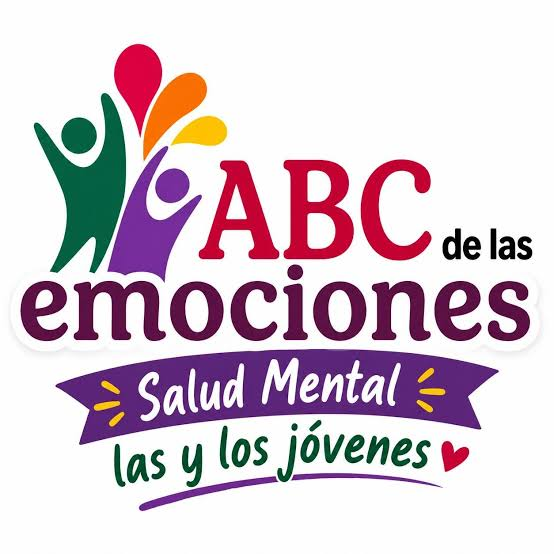
Ofrece información clara y herramientas prácticas para comprender lo que se siente, practicar el autocuidado y el cuidado mutuo, convivir con seguridad en redes sociales y tecnología, transformar el entorno en colectivo y saber cuándo pedir ayuda.
Se centra en Reconocer (detenerse, identificar y nombrar la emoción), Comprender (analizar qué sucede y por qué se siente así) y Actuar (aplicar estrategias para manejar emociones y cuidar a uno mismo y a los demás).
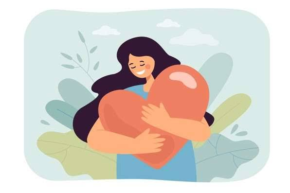
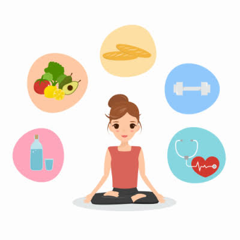
Salud mental y emociones en la adolescencia.
Cuidarnos y cuidar a otras personas (autocuidado, relaciones, proyecto de vida y vida en colectivo).
Cómo vivimos y sentimos el mundo virtual (diseño digital, IA, uso responsable y violencias/ciberacoso).
De lo que sentimos a lo que transformamos (participación y acciones comunitarias).
No es un manual de autodiagnóstico ni sustituye la atención profesional de salud mental.
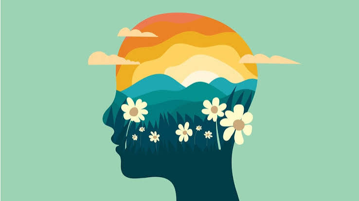
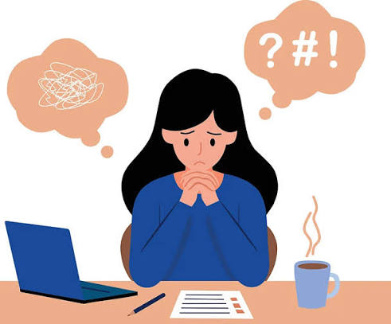
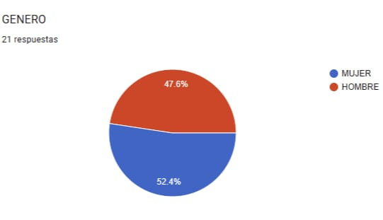
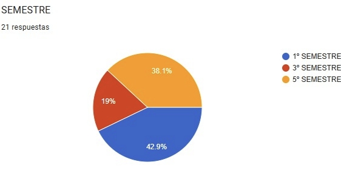
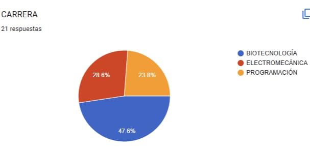
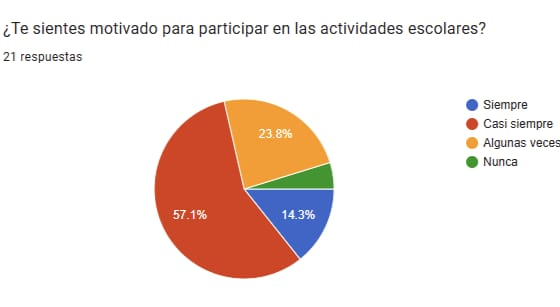
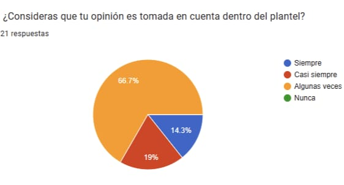
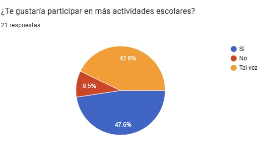
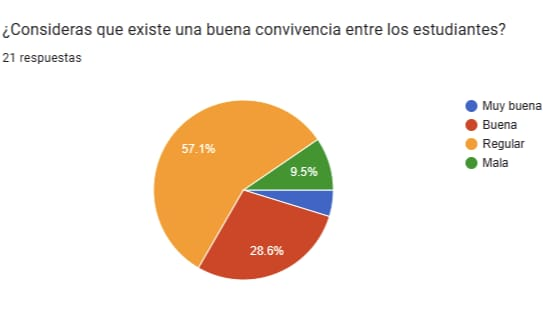
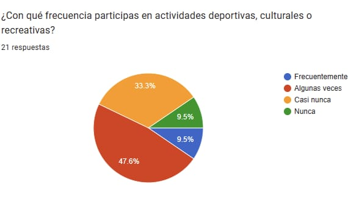
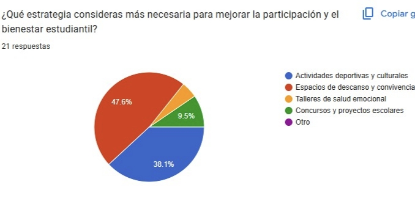
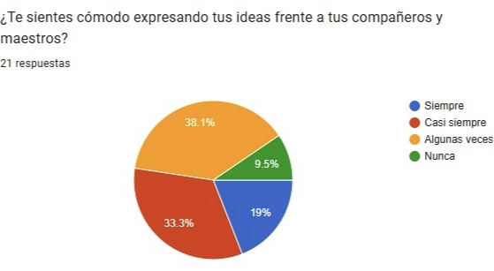
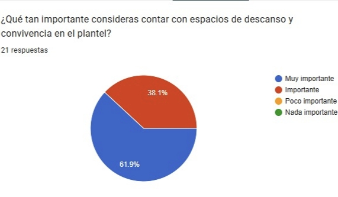
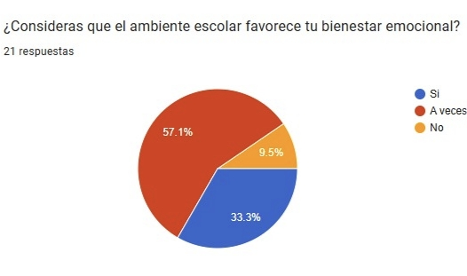
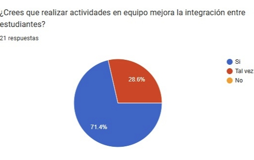